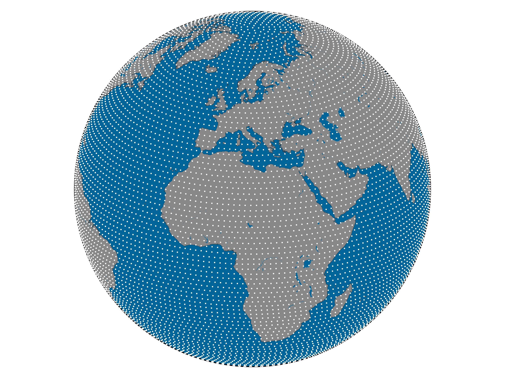

Tools for analysis of geospatial time series data.
Christoph Paulik, Sebastian Hahn, Andreea Plocon, Christoph Reimer, Alexander Gruber
christoph.paulik@geo.tuwien.ac.at

Background
- Remote sensing of soil moisture
- Time series based retrieval algorithm
- Temporal dynamics are often more important for analysis than spatial distribution
- Grew out of soil moisture validation

Data preparation for time series analysis
Typical workflow for time series analysis
Spatial referencing
- Discrete Global grids
- SMOS grid - Icosahedron Snyder Equal Area (ISEA)
- Gaussian Grids - used by ECMWF
- Grid systems
- UTM system
- Equi7 system [bauer2014optimisation]

pygeogrids
- pygeogrids
 is a package for managing discrete (global) grids
is a package for managing discrete (global) grids - has a notion of subdivision that can correspond to I/O units (e.g. netCDF files)
How to store time series
- Resample to data cube
- Store as compressed sparse arrays
- Climate and Forecast (CF) Metadata conventions http://cfconventions.org/
CF - Orthogonal multidimensional
CF - Incomplete multidimensional
CF - Contiguous ragged
CF - Indexed ragged
Interface for data I/O
pygeobase defines abstract base classes for a common interface
read_ts(gpi) read_ts(lon, lat) iter_ts() read_img(datetime) iter_img(startdate, enddate)
Implemenation for netCDF CF
Dataset that knows itself
- Can traverse itself and return a time series per grid point
- Optimized I/O because dataset object knows how data is stored
Algorithms and processing
- pytesmo
implements temporal matching,
filtering, and algorithms specifically needed for soil moisture validation
e.g.
triple
collocation.
- Framework for time series based computations parallelized via ipyparallel (formerly IPython parallel)
- I/O for soil moisture RS and in-situ datasets
Example - global validation
ecmwf_reader = ECMWF.ERA_Interim() ascat_reader = AscatH25_SSM() datasets = {'ASCAT': {'class': ascat_reader, 'columns': ['sm'], 'type': 'reference'}, 'ERAINT': {'class': ecmwf_reader, 'columns': ['soilm-l1'], 'type': 'other', 'kwargs': {'period': period}, 'grids_compatible': False, 'use_lut': True, 'lut_max_dist': 100000}} process = Validation(datasets=datasets, temporal_matcher=BasicTemporalMatching(), scaling='lin_cdf_match', metrics_calculator=BasicMetrics(), period=period) jobs = process.get_processing_jobs() return process, jobs
Where do the packages fit in
Summary
- Suite of Python packages for time series optimized processing
- pytesmo
- pygeogrids
- pygeobase
- pynetCF
- BSD licensed
Thank you, Questions?
- Get in touch
- You can find this presentation at http://cpaulik.github.io/2015-eoscience2.0
- cpaulik
- TUW-GEO
- christoph.paulik@geo.tuwien.ac.at
- Thanks to the Python open source community.
References